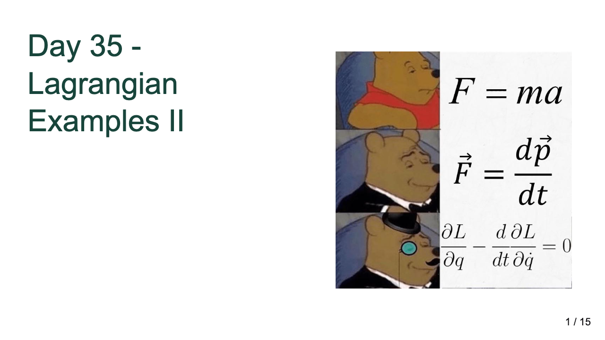
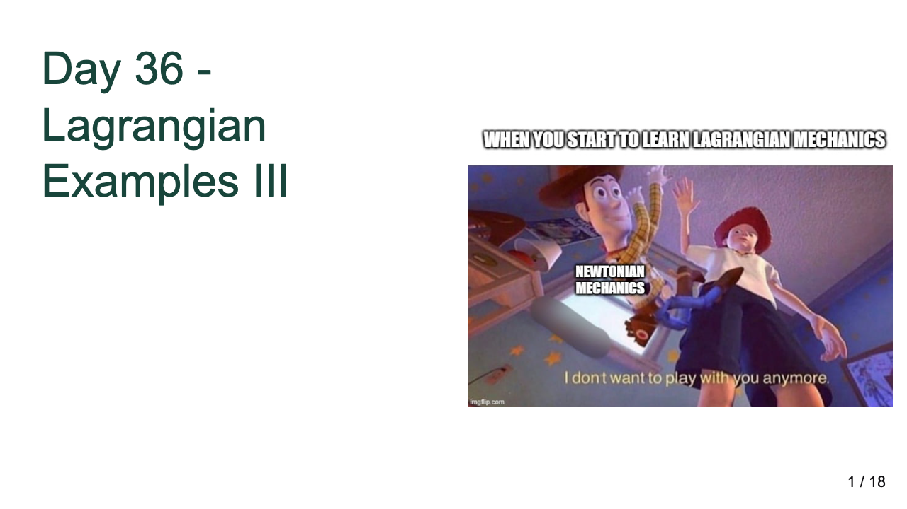
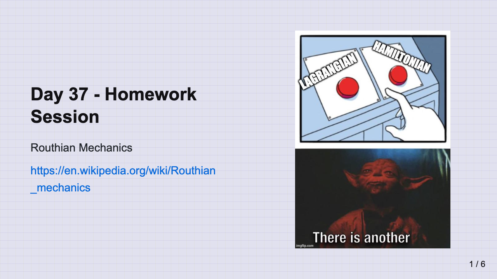
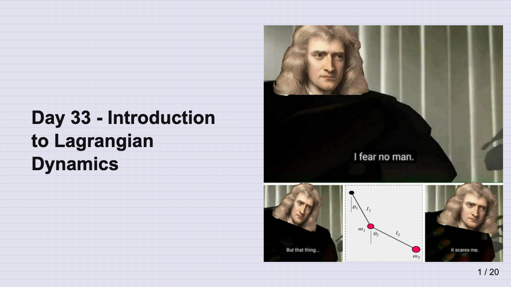
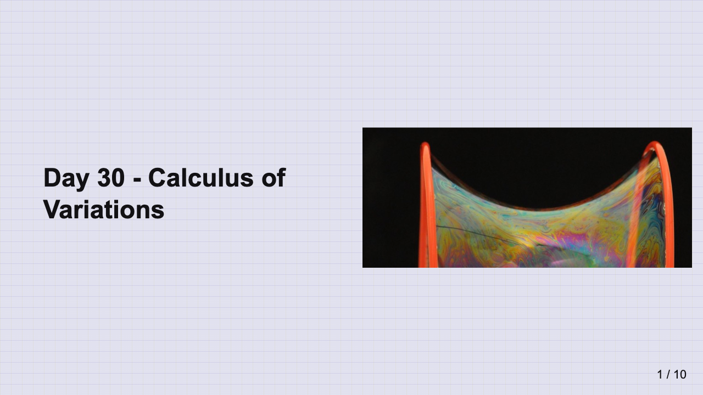
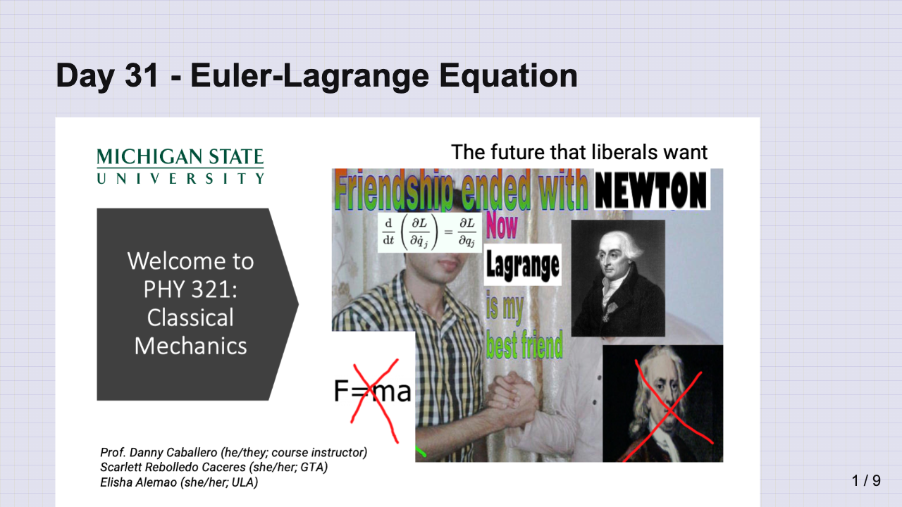
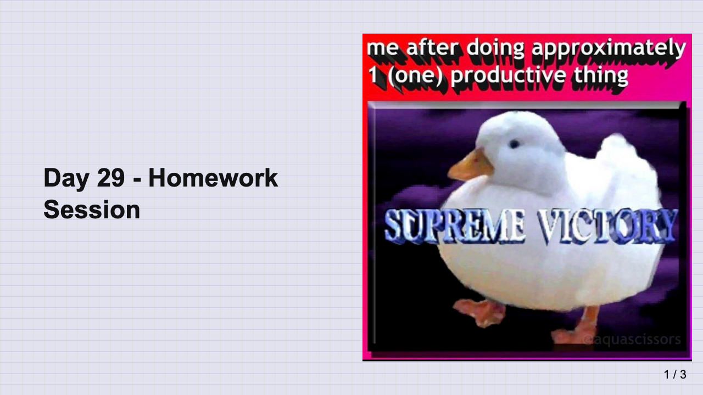

Course Material and Links#
Materials will appear in reverse chronological order, with the most recent appearing at the top.
Class Zoom: https://msu.zoom.us/j/92295821308
Class Week 14, April 21-25, 2025 (CW17)#
Topic: Project Work
This week, we will work on our projects. Projects are due Monday, April 28, 2025. You should be working on your projects in class.
Resources#
Slides#
21 Apr 2025 (Slides)
Class Week 13, April 14-18, 2025 (CW16)#
Topic: Lagrangian Dynamics and Examples
This week, we will work with examples of Lagrangian dynamics. We will focus on how to apply the Euler-Lagrange equations to various systems and how to interpret the results. We will also discuss the concept of forces of constraint and how they can be incorporated into the Lagrangian framework.
You should review the discussion about Lagrangian Dynamics and the notes on Lagrangian Dynamics Examples. You should also make sure to have read JRT 5.1-5.3; MLB 9.1-9.4.
Assignments#
Homework 8 (due April 18, 2025)
Resources#
Slides#
14 Apr 2025 (Slides)

16 Apr 2025 (Slides)

18 Apr 2025 (Slides)

Class Week 12, April 7-11, 2025 (CW15)#
Topic: Introduction to Lagrangian Dynamics
This week, we will continue our discussion of Lagrangian dynamics. We will focus on the Euler-Lagrange equations and how to derive them for various systems. We will also discuss how to apply these equations to solve problems in classical mechanics.
You should review the discussion about Introduction to Lagrangian Dynamics and the notes on Lagrangian Mechanics. You should also make sure to have read JRT 5.1-5.3; MLB 9.1-9.4.
Assignments#
Midterm 2 (due April 11, 2025)
Homework 8 (due April 18, 2025)
Resources#
Slides#
7 Apr 2025 (Slides)

Class Week 11, March 31-April 4, 2025 (CW14)#
Topic: Calculus of Variations
We will introduce a new topic this week: the Calculus of Variations. This powerful mathematical tool allows us to find the path that minimizes or maximizes a certain quantity, which is foundational for understanding Lagrangian mechanics. We will discuss the theory behind the Calculus of Variations, discuss how to set up problems with it, and find solutions to a few canonical problems.
You should review the discussion about Calculus of Variations and the notes on the Euler-Lagrange Equation. You should also make sure to have read JRT 6.1-6.3; MLB 9.1-9.4.
Assignments#
Midterm 2 (due April 11, 2025)
Resources#
Slides#
31 Mar 2025 (Slides)

2 Apr 2025 (Slides)

4 Apr 2025 (Slides)
Class Week 10, March 24-28, 2025 (CW13)#
Topic: Chaos
As decided by the class, we will spend this week discussing the concept of chaos and how it arises in nonlinear systems. We will focus on the conceptual aspects of chaos and how systems can exhibit chaotic behavior. We will also discuss the concept of fractals and how they are related to chaos.
You should review the discussion about Chaos and the activity that we are going to do in class exploring chaotic systems.
Assignments#
Homework 7 (due March 28, 2025)
Resources#
Slides#
24 Mar 2025 (Slides)

26 Mar 2025 (Slides)

28 Mar 2025 (Slides)

Class Week 9, March 17-21, 2025 (CW12)#
Topic: Damped Driven Oscillations
This week, we will start to drive our oscillators with an external force. We will discuss how to model these systems and how to predict their behavior. We will also discuss the concept of resonance and how it arises in driven systems.
You should review the discussion about Damped Driven Oscillations and the notes on Damped Driven Oscillations. You should also make sure to have read JRT 5.5-5.6; MLB 8.6.
Assignments#
Homework 6 (due March 21, 2025)
Homework 7 (due March 28, 2025)
Resources#
Slides#
17 Mar 2025 (Slides)

19 Mar 2025 (Slides)

21 Mar 2025 (Slides)

Class Week 8, March 10-14, 2025 (CW11)#
Topics: Oscillations
This week, we will add damping to our oscillators and see what effects we can predict. We will focus on the damped harmonic oscillator because it’s solutions are so important and provide the basis for many other systems.We will (re)introduce complex numbers and how they can be used to solve differential equations.
You should review the discussion about Oscillations and the notes on Damped Oscillators. You should also make sure to have read JRT 5.1-5.2, 5.4; MLB 7.1-7.2; 8.5.
Assignments#
Homework 5 (due March 14, 2025)
Homework 6 (due March 21, 2025)
Resources#
Slides#
10 Mar 2025 (Slides)

12 Mar 2025 (Slides)

14 Mar 2025 (Slides)

No Class Week, March 4-8, 2025 (CW10)#
Spring Break
Class Week 7, February 24-28, 2025 (CW9)#
Topics: Nonlinear Dynamics, Phase Portraits
This week we will introduce how to investigate nonlinear systems with he tools we have developed. We will bring in a new tool, called the phase portrait, to help us visualize the behavior of these systems. We will also discuss the concept of chaos and how it arises in nonlinear systems.
You should review the discussion about Nonlinear Dynamics and the notes on Critical Points and Phase Portraits. You should also make sure to have read Strogatz 2.0-2.3; 5.0-5.2.
Assignments#
Midterm 1 (due February 28, 2025)
Resources#
Textbook Readings: Strogatz 2.0-2.3; 5.0-5.2
Slides#
24 Feb 2025 (Slides)

26 Feb 2025 (Slides)

28 Feb 2025 (Slides)

Class Week 6, February 17-21, 2025 (CW8)#
Topics: Equilibrium, Stability, Introduction to Momentum
This week we will start to investigate the concept of equilibrium and stability, which are powerful tools to understand the behavior of systems. We will also introduce the concepts of linear and momentum and how they are conserved. We will revisit both concepts throughout the semester adding more detail.
You should review the discussion about Equilibrium and Stability and the notes on Stability and Energy and Linear and Angular Momentum. You should also make sure to have read JRT Ch 3.1, 3.3-3.4 and 4.6.
Assignments#
Midterm 1 (due February 28, 2025)
Resources#
Textbook Readings: JRT 3.1, 3.3-3.4, 4.6
Slides#
17 Feb 2025 (Slides)

19 Feb 2025 (Slides)

21 Feb 2025 (Slides)

Class Week 5, February 10-14, 2025 (CW7)#
Topics: Work, Energy, Conservative Forces
This week we begin to talk about conservation laws and dive into conservation of energy. We will discuss how energy is another useful tool for investigating physical systems and how to look at graphs of potential energy to gain insight into motion.
You should review the discussion about Conservation Laws and the notes on Energy Conservation. You should also make sure to have read JRT Ch 4.1-4.4.
Assignments#
Homework 4 (due February 14, 2025)
Resources#
Textbook Readings: JRT 4.1-4.4, 4.6
Slides#
10 Feb 2025 (Slides)

12 Feb 2025 (Slides)

14 Feb 2025 (Slides)

Class Week 4, February 3-7, 2025 (CW6)#
Topics: Fluid Resistance, Drag Forces, and Equations of Motion
This week, we start complicating our models with the addition of drag forces. We will discuss the physics of drag, cover examples that include drag forces, and learn how to set up and try to solve the equations of motion for these systems. We will extend the idea of equations of motion to two other canonical problems: central forces and the simple harmonic oscillator.
You should review the discussion about Fluid Resistance and the notes on Equations of Motion. You should also make sure to have read JRT Ch 2.1-2.4.
Assignments#
Homework 3 (due February 7, 2025)
Resources#
Textbook Readings: JRT 2.1-2.4
Slides#
03 Feb 2025 (Slides | Recording)
05 Feb 2025 (Slides)
07 Feb 2025 (Slides)
Class Week 3, January 27-31, 2025 (CW5)#
Topics: Newton’s Laws and Modeling Systems
This week, we begin our analysis of physical systems in earnest with Newton’s Laws. We will discuss the approach of developing a mathematical model of a system, how to investigate it’s equation of motion, and to make predictions about the system’s behavior.
You should review the discussion about Mathematical Modeling and the Newton’s Laws notes. You should also make sure to have read JRT Ch 1.1-1.6 and AMS Ch 1-4.
Assignments#
Homework 2 (due January 31, 2025)
Resources#
Textbook Readings: JRT 1.1-1.6; AMS Ch 1-4
Slides#
31 Jan 2025 (Slides)
29 Jan 2025 (Slides)
27 Jan 2025 (Slides)
Class Week 2, January 20-24, 2025 (CW4)#
Topics: Mathematical Preliminaries; Discrete Models
This week we will continue our discussion of the mathematics we need to investigate systems and how to begin making models. We will start talking about how to discretize the equations of motion and solve them numerically. This method called Euler-Cromer is a simple and effective way to solve many problems in physics.
You should review the overview on Computing as a tool for science and the Mathematical Preliminaries. You should keep reading JRT up to Ch 1.6 and look over AMS Ch 4.2 and Ch 5.
Polls to complete:#
By Monday, Jan 27, 2025
Assignments#
Homework 1 (due January 24, 2025)
Homework 2 (due January 31, 2025)
Resources#
Textbook Readings: JRT 1.4-1.6; AMS Ch 4.2 and 5
Slides:#
24 Jan 2025 (Slides)

22 Jan 2025 (Slides)

Class Week 1, January 13-17, 2025 (CW3)#
Topics: Introduction, Vectors, Kinematic Quantities
This week is an introduction to the course and a reminder on vectors, space, time, and motion. We will also discuss Python programming and how it will be used in this course. We will also discuss the software we will use in this course.
You should review the Getting Started page to learn about the course. It will direct you to other pages that will help you get started.
You should also review the first week’s notes on Classical Physics and the Introduction to Classical Mechanics, or read Chapter 1.1-1.4 of JRT, Chapter 1-4 of AMS, and Chapter 3.4 of MLB. Again, these books are not required, but they are highly recommended.
Embedded in both notes pages are videos that you can watch to help you understand the concepts. We do not require you to watch these videos, but they are recommended to help you see the larger picture of what we are doing in class.
Assignments#
Homework 1 (due January 24, 2025)
Resources#
Textbook Readings: JRT 1.1-1.4; AMS Ch 1-4; MLB 3.4
Slides#
17 Jan 2025 (Slides)

15 Jan 2025 (Slides)

13 Jan 2025 (Slides)